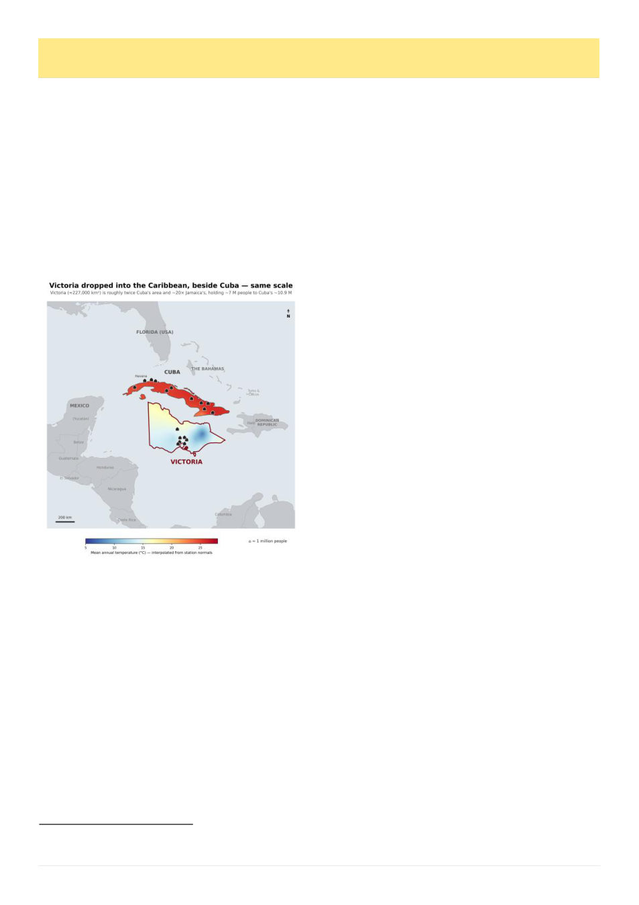

18
Australian Bee Journal
Beekeeping In Cuba
By Kris Fricke
Cuba is known for having the world’s largest popu-
lation of European Apis mellifera that are resistant to
the varroa mite.1 This is often lauded as the perfect ex-
ample of treatment free beekeeping leading to the prob-
lem solving itself. Let us examine how they actually
arrived where they are.
First let us picture this place. Cuba is an oblong is-
land about half as big as Victoria, with about 160% the
population. That’s 3.5 x our state population density
altogether, but as you know Victoria has a lot of rela-
tively empty space. The population density of Cuba is
half that of the Mornington Peninsula which I think
gives a better sense of it.
The climate of Cuba matters particularly when talk-
ing about comparative effects of varroosis. Climatical-
ly it most resembles coastal Queensland between Mac-
kay and Rockhampton – subtropical, wet/dry seasons,
high humidity. The coldest parts of the year would only
get to around 12°C overnight and there’d probably nev-
er be a seasonal brood break.
European honey bees were first imported to Cuba
from Florida on May 2nd, 1763,2, 3, * and, critically, the
Africanized honey bees that have become pervasive in
South, Central and southern North America have never
arrived in Cuba.4 Honey is now (or was in 2009 any-
way) Cuba’s second most valuable agricultural export.5
Only the Cuban Beekeeping Enterprise (Empresa
Apicola Cubana) AKA Apicuba is legally permitted to
buy honey from beekeepers in Cuba.6 The communist
economy of Cuba also results in interesting passages
like
“Under the current conditions of Cuban beekeeping,
visiting and treating on two successive occasions with
an interval of 7–10 days the 500–700 colonies of a
Basic Unit of Cooperative Production (UBPC) requires
a fuel consumption that could be beyond the means of
the enterprise and the allocations determined by
MINAGRI and the country for this activity, even if it is
economically viable.”7
MINAGRI in this context is the Ministry of Agricul-
ture (going by a particularly 1984-esque contraction).
As of 2015 there were 2000 beekeepers in Cuba running
220,000 hives,1 organized into 60 UBPCs, 20 Agricul-
tural Production Cooperatives, and 1,100 Credit and
Service Cooperatives. Producers were paid the equiva-
lent of AUD$645-1095 per ton by Apicuba, the honey
then being exported to Europe for as much as
AUD$4,200 per ton (all figures 2015 conversion rates).8
Varroa was detected in Cuba in April 1996,9 in three
apiaries in Matanzas province, though, in a now familiar
pattern, subsequent delineation found it already wide-
spread in the surrounding area10 and it is believed to
have arrived a few years earlier, possibly from illegal
queen imports.1 Movement of bees between major re-
gions was prohibited,1 but it quickly spread throughout
the country causing national annual losses directly at-
tributed to varroa of approximately 4%.11
Between December 1996 and February 1997 another
Cuban researcher found 27 Alcohol Wash Equivalent
(AWE) (9%), as well as 36% of worker brood infested,
and 74% of drone brood.12 In 1998, 88 hives studied
had an average infestation of adult bees of 21 AWE.13
The chief veterinary officer of ApiCuba lists the
management strategy in 2001 in a manner that sounds
much like our own integrated pest management pyra-
mid: “control of the epizootiological structure of the
species [ie “Cultural Methods”]; training of producers
and technical personnel; genetic improvement in search
of tolerant bees; biotechnical measures with the use of
trap comb and chemical treatments with synthetic and
organic products”
I’ll quote extensively from said chief veterinary of-
ficer’s 2001 report because it gives a real good picture
of what they were looking at 5 years after varroa ar-
rived:
“Controlling drone breeding by different methods
has proven too laborious when trying to avoid chem-
ical treatments (Calis et al., 1999b), while chemi-
cals, including those applied on plastic supports, are
so far the most effective and easiest to apply means,
despite their known drawbacks.
* Though there are references to now-lost memoirs that they may have been brought over as early as 1750 (Bande 2001).
For comparison, here is Victoria in true scale comparison
to Cuba, the number of houses represent the distribution
of the population, giving a sense both of the comparative
population and distribution. In this scenario western
Victoria would have much better beaches.
(Continued on page 19)